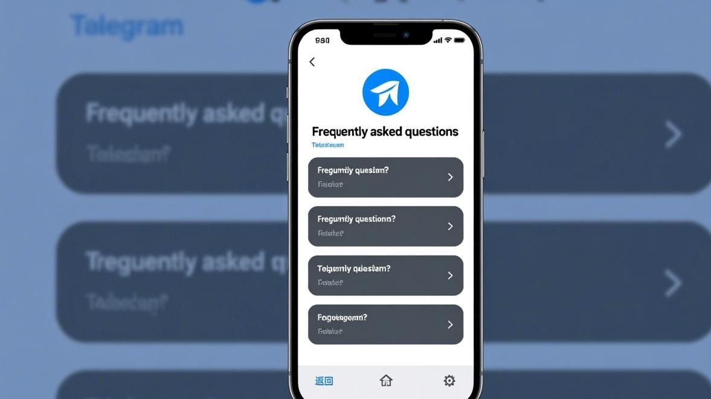
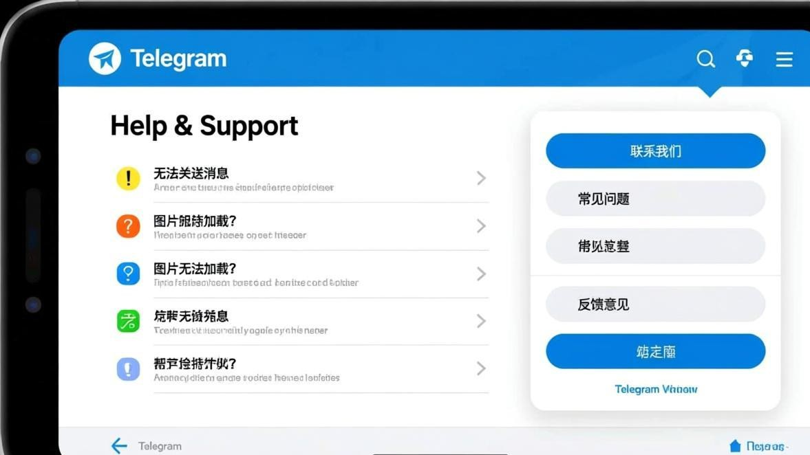

Telegram频繁掉线、异地登录验证常见问题汇总
Telegram用久了，除了登录时遇到的各种报错，还有一类特别让人心烦的情况：明明已经登录了，聊着聊着突然提示"连接中"发不出去；出差换个地方打开App又要重新验证；换个新手机登录提示异常。这篇FAQ把大家问得最多的几个问题一次性讲清楚。

Q1：为什么Telegram老是掉线？聊天时突然显示"连接中"
掉线的原因通常不是Telegram服务器的问题，而是你手机本地的问题。主要有几种可能：
- 网络波动——WiFi信号不稳或移动数据切换基站时短暂断流。尝试在WiFi和4G/5G之间切换，或者走到信号更好的地方
- 后台被系统杀掉——安卓手机的省电模式会把Telegram的后台进程关闭。去设置→电池→省电白名单，把Telegram加进去
- App版本过旧——旧版本的连接保活逻辑可能有问题，更新到最新版通常能改善
- 缓存数据异常——去Telegram内"设置→数据和存储→存储用量"清除缓存，让客户端重新建立连接
经验之谈：安卓用户掉线问题比iOS用户多很多，主要是因为国内安卓系统的省电策略太激进。把Telegram加入"自启动"和"省电白名单"是效果最好的措施。
Q2：出差或旅行到新地方，打开Telegram要我重新验证？
这是Telegram的安全机制，属于正常行为，不是你的账号出了问题。当Telegram检测到你的登录IP地址和之前差异很大时（比如从北京到了上海，或者从国内到了国外），会要求重新验证手机号，确保是账号主人在操作。
处理方法：正常接收验证码完成验证就行。验证通过后Telegram会记住新的登录位置，短时间内不会再次要求验证。如果收不到验证码，参考验证码收不到解决教程。
Q3：换了新手机登录Telegram，提示异常或需要重新验证？
换设备登录是Telegram安全检测的重点场景。初次在新设备上登录，Telegram一定会发送验证码到你原来的设备或手机号上，这是为了确认是你本人。
具体操作：在新手机上正常输入手机号 → 接收验证码。验证码会发送到已经在线的旧设备Telegram客户端上，而不是短信。这就是Telegram的"设备间信任传递"机制。如果你的旧手机还在身边，直接在新手机上查看旧手机Telegram发来的验证码即可。
Q4：怎么查看和管理已登录的设备？
Telegram支持多个设备同时在线，但你最好定期检查一下设备列表，防止陌生设备登录了你的账号。
操作路径：设置 → 隐私和安全 → 活跃会话（或叫"设备"）→ 查看所有已登录设备列表。每台设备会显示登录时间和IP归属地。如果看到不认识的设备，直接点击"终止会话"让它强制下线。

Q5：换了手机号，Telegram怎么办？
不需要重新注册。Telegram支持在App内直接更换绑定手机号：设置 → 手机号 → 更改号码。用新号码接收验证码完成验证后，旧号码自动解绑。所有聊天记录、群组和联系人都完好保留，不受任何影响。
Q6：如何防止别人登录我的Telegram？
最重要的是开启两步验证：设置 → 隐私和安全 → 两步验证 → 设置一个密码。开启之后，即使别人拿到了你的短信验证码，也必须再输入你设的密码才能登录。这是目前Telegram最有效的账号安全保护措施。
另外建议：密码设复杂一点，同时设置一个恢复邮箱，万一忘记密码可以通过邮箱重置。
更多高频问题
Q：Telegram提示"您的账号已被删除"？
Telegram默认设置是超过6个月不登录就会自动删除账号，且不可恢复。如果确实长期没用，只能重新注册。如果认为是被误删，发邮件到 recover@telegram.org 申诉。
Q：Telegram消息通知延迟很久才到？
Telegram的推送通知依赖Google的FCM推送服务。如果你的手机没有Google服务框架或者FCM被禁用，消息通知会延迟甚至收不到。建议在Telegram设置中开启"始终接收推送通知"，并且将Telegram加入系统自启动白名单。
Q：退出Telegram账号后，聊天记录会丢吗？
不会。Telegram的所有数据默认存储在云端，退出账号只是从这台设备登出，换设备或重新登录后所有聊天记录都会自动恢复。